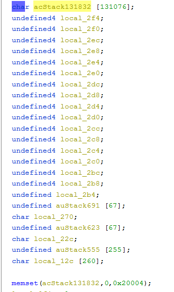

DCS-960l
条评论DCS-960L hnap_service
固件版本：REVA 1.09.02
下载：ftp://ftp2.dlink.com/PRODUCTS/DCS-960L/
Qemu 环境模拟
Binwalk 能直接解出文件系统，查看一下busybox 是MIS big endian。大端的固件，一般模拟出来的eth0 ip 可能是 192.168.0.1 ，所以创建配置就用如下命令。
1 | brctl addbr Virbr0 |
然后root登陆，把qemu里的eth0改了：ifconfig eth0 192.168.0.1/24 up。把解压出来的文件系统传上去并解压出来，然后用命令挂载一下，然后chroot：
1 | mount -o bind /dev ./squashfs-root/dev/ |
接着，要模拟web服务。查看文件结构，看到 /etc 下有rcS 脚本，那就执行这个脚本。另起一个bash ，用ssh 连上qemu。然后去执行./rcS。
可以看到一大片输出，最后停着。去另一个bash查看ip。
看到有br0，eth0。但是br0没有ip，给它一个。
1 | ifconfig eth0 192.168.0.1/24 up |
然后去浏览器访问192.168.0.1，弹出一个对话框，要输入账号密码。在/etc 目录有个passwd_default文件，里面有默认账户密码。
账户admin，密码为空。登陆成功，web服务模拟成功。
后续要测试hnap_service，它是在/web/cgi/hnap目录下。这里先用ps看看运行了什么程序。
没有看到hnap_service，但是有hnap_push_service在运行。只要web服务模拟成功了，后续的测试都不成问题。
漏洞分析
根据提供的exp来看，应该是hnap_service中的SOAPAction字段存在溢出。多半是个栈溢出。这里用IDA分析hnap_service，无法F5。所以不用IDA，用Ghidra。
定位到关键函数：main(void)
实际上漏洞就在这里，fread() 造成。从stdin读取的数据，赋给了acStack131832。而acStack131832的长度只有0x20004。

由于读入的数据包含了SOAPAction字段的值，而长度依据是 n，而n最大为0x1fffff。所以，只要SOAPAction的值够长，就能让acStack131832溢出。而且是栈溢出。
发包测试
这里用burp来发包进行测试。
发送的数据如下。注意这里的cookie是随便写的。
得到回包。

同时，能从启动rcS的qemu终端看到回显。如下。
这验证了上面的分析。
那么接下来就是让SOAPAction字段超长，让他覆盖掉栈上其他数据，比如说函数的返回地址，这样就能控制程序的执行流程。需要多长，就要进行具体的调试分析。
但在分析利用之前，需要搞清楚为什么不需要身份认证。
Authorization
1 | HTTP协议中的 Authorization 请求消息头含有服务器用于验证用户代理身份的凭证，通常会在服务器返回401 Unauthorized 状态码以及WWW-Authenticate 消息头之后在后续请求中发送此消息头。 |
用 Authorization 来进行身份认证。
YWRtaW46 是base64加密字符。解密的结果就是账户和密码的组合。
httpd
这里，稍微分析一下httpd，搞清楚它是怎么处理用户的请求
这块代码就是处理请求的核心部分。通过一个switch来决定。Swtich的值来自于函数FUN_00401c2c。
那么，猜测这个函数的功能就是进行身份认证。还可以看到对账户和密码进行加密的地方。如下。
hnap_service身份认证
身份认证靠的是Authorization。但是hnap_service服务，为什么不需要认证？我猜想是，hnap_service由httpd进程处理然后在转交，处理的过程应该是忽略了身份认证。
通过静态分析 httpd中，可以看到hnap_service分发的过程。
前面说httpd是通过一个switch来处理请求。这里，就是比较字符串，变量 local_34 就是 /hnap/hnap_service。
所以分发hnap_service请求的函数，应该是FUN_00402040()。但是，身份认证去哪了呢？在下面不远处看到如下代码。
401.html 是未授权时，返回的页面。说明checkToken_localrecording 应该才是校验身份的。而分发hnap_service的函数FUN_00402040()是在校验身份之前。
那这就说明下图字符串定义的服务，都不需要认证身份。
也就是cgi结尾的请求，以及 /fvcgi/storage/localstorage_download.ts，/onvif/onvif_service，/cam/webapi_service，/hnap/hnap_service，/localrecording/。这是一个有意思的发现。但是这只是静态分析的结果，需要动态调试进行验证。
接着，去看看函数FUN_00402040做了什么。
代码用到了 execve，那这句可能是用来启动其他服务的。把需要处理的请求，通过execve调用对应的程序，并传递过去
漏洞利用
首先使用gdb对httpd进程进行挂载调试。
Mips gdb 调试
调试需要mips 32 大端的gdb。网上没有，只能自己编译一份。需要Buildroot环境。具体编译，参考：https://blog.csdn.net/zhy025907/article/details/52332528
注意的地方，环境变量要设置正确。
最后得到可用的gdb。
注
最后，我并没有把这个漏洞分析完。时间有点久了，原因好像是 gdb 调试不起来。上面的 gdb.7.11 版本依然无法调试 http 进程。然后我应该是编译了一份gdb.7.6 ，但是还是不行。而 gdb.7 一下的版本我用 Buildroot 没有编译成功。总会出很多原因。。。所以没有继续分析下去。